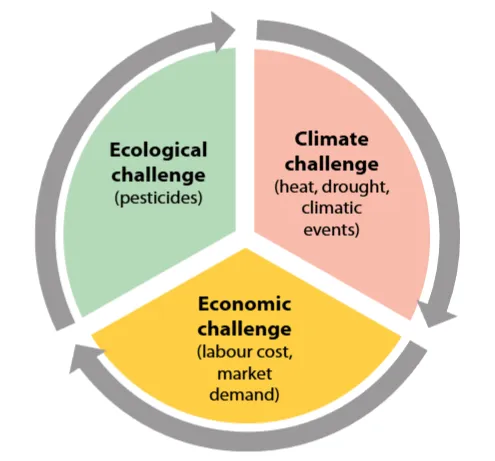
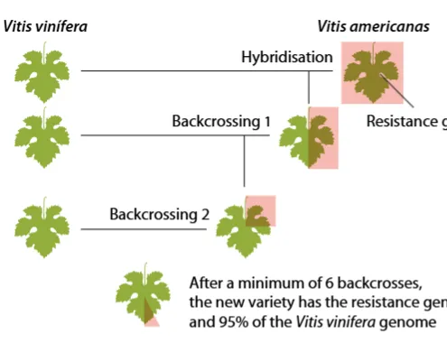
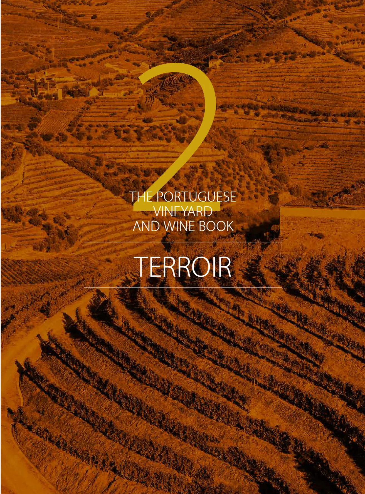

Kapitel 1 · Kurzer Überblick über die Geschichte des Weinbaus in Portugal
„Green Deal“ und „Farm to Fork“
Die Weltbevölkerung hat sich in weniger als einem Jahrhundert vervierfacht (Quelle: Population growth over the years/Our World in Data), mit schädlichen Auswirkungen auf das Klima. Man erkannte, dass die professionellen landwirtschaftlichen Verfahren den natürlichen Ökosystemen und der Artenvielfalt von Fauna und Flora enorm schadeten. Die Ausweitung der Monokulturen, die CO2-Emissionen, der Einsatz fossiler Brennstoffe für die Mechanisierung und die Belastung durch Pflanzenschutzmittel erschienen plötzlich in einem neuen ökologischen Licht, und es entstand ein neues Umweltparadigma. Politisch ist ein Konflikt zwischen fachlicher Logik und doktrinärer Umweltideologie entstanden (Böhm H. J. 2019, Zeitschrift APH).
Mit dem Klimawandel befindet sich Portugal in einigen Weinbaugebieten bereits an einer Grenze für die nachhaltige Erzeugung von Qualitätswein, ohne die Möglichkeit, Rebmaterial aus wärmeren Gebieten zu verwenden. Im Weinbau gilt das Wissen um die Resistenzquellen gegen die wichtigsten Schaderreger zunehmend als grundlegend für einen nachhaltigen Weinbau (Töpfer R., JKI, Logroño und Évora). Ende des 19. Jahrhunderts hatte jedoch die Verwendung von Rebmaterial amerikanischer und asiatischer Sorten, ob als Direktträger oder durch Kreuzung mit europäischen Sorten, zu einer Verschlechterung der Weinqualität in Europa geführt. In den 1950er-Jahren wurden Hybriden verboten, da es zunehmend wirksame Pflanzenschutzmittel gab und die traditionellen Vitis-vinifera-Sorten qualitativ überlegen waren (Balay, Stephan, Vitis prohibita, histoire secrète des cépages interdits, 2019).
Heute aber gelingt es in Portugal berufsständischen Bündnissen mit beherrschendem Einfluss auf die öffentliche Meinung, die am Vorurteil aus der Zeit der ersten und zweiten Hybridgeneration festhalten, dogmatisch eine „Rassenreinheit“ der traditionellen Rebsorten zu verteidigen – obwohl die ersten neuen pilzwiderstandsfähigen Rebsorten (PiWi) seit mehreren Jahrzehnten von der Europäischen Kommission offiziell anerkannt sind.
Die Herausforderung des 21. Jahrhunderts: Klimawandel sowie ökologische und marktbedingte Vorgaben
Die Anpassung der Weinerzeugung einer Region an veränderte Umweltfaktoren oder an die Nachfrage lässt sich kurz- und mittelfristig mit weinbaulichen Techniken bewältigen. Langfristig hängt die Anpassungsfähigkeit jedoch von der inneren genetischen Vielseitigkeit der traditionellen Leitsorten oder von der Verfügbarkeit neuer, angepasster Sorten ab.
Der portugiesische Weinbau muss sich an folgende veränderte Rahmenbedingungen anpassen:
– Veränderte Marktnachfrage: In den 1980er-Jahren dauerte die Wiedergewinnung alter Sorten durch mengenorientierte Selektion historischer Qualitätssorten zwei Jahrzehnte. Heute ist der Markt internationaler, und nur beste Qualität ist wettbewerbsfähig. Einige ertragreiche Klone von früher eignen sich nicht mehr. Es braucht eine neue Erkundung von Rebsorten für hohe Qualität und eine eigenständige, heimische Weinidentität. – Entwicklung der Arbeitskosten: Personalmangel und steigende Lohnkosten erfordern die Mechanisierung der Arbeiten im Weinberg. Sorten, die sich besser für die Mechanisierung arbeitsintensiver Weinbergsarbeiten wie Rebschnitt, Laubarbeit und Lese eignen, gewinnen an Bedeutung. Morphologisch-funktionelle Merkmale wie stark plagiotroper Triebwuchs, übermäßiger Austrieb von Nebenknospen, mehrfacher Austrieb der Augen oder Wasserschosse am Stamm können durch neue Klonenzüchtung zugunsten somatischer Variationen bis zu einem gewissen Grad züchterisch verbessert werden. – Klimawandel: Vor der Nelkenrevolution vom 25. April 1974 bestimmte ein hoher Ertrag die Sortenwahl in den meisten Weinregionen Portugals. Ertragreiche Sorten für die Massenweinerzeugung wie Diagalves und Seminário verschwanden und wurden in den folgenden Jahrzehnten durch historische Qualitätssorten wie Touriga Nacional, Aragonez, Trincadeira, Castelão, Fernão Pires und Arinto ersetzt. Doch einige dieser neuen Sorten stoßen bereits jetzt und künftig wegen ökologischer Veränderungen und des Klimawandels auf Schwierigkeiten. Unter diesen neuen Umweltbedingungen wird sich das Sortenprofil erneut ändern. Anders als die nördlicheren Regionen, die Sorten aus südlicheren Weinbaugebieten übernehmen können, gibt es südlich von Alentejo und Algarve keine Qualitätsweinbaugebiete mehr und damit keine Qualitätssorten aus einer noch südlicheren Region, die man einführen könnte. Deshalb muss neue Züchtungsarbeit die Selektion durch neue Phänotypisierung der vorhandenen Qualitätssorten begleiten. – Ökologische Herausforderungen durch neue gesetzliche Vorgaben: Man nimmt an, dass der extreme Rückgang der Artenvielfalt von Fauna und Flora, aber auch der Zeugungsfähigkeit des menschlichen Samens, auf Pestizide zurückgeht. Seit dem Jahr 2000 spiegelt die europäische Politik neue ideologische Strömungen wider. Die Ausweitung der Monokulturen, die CO2-Emissionen, der Einsatz fossiler Brennstoffe für die Mechanisierung und die Belastung durch Pestizide wurden plötzlich aus einer neuen ökologischen Perspektive betrachtet, und es entstand ein neues Umweltparadigma. Angesichts fehlender konkreter Maßnahmen zum Schutz der natürlichen Umwelt rebellieren junge Menschen aus Angst um ihre Gesundheit und Zukunft und reagieren emotional.

Von 2000 bis 2010 gab Frankreich der Rebenzüchtung neue Impulse, um den chemischen Pflanzenschutz zu verringern und neue Strategien der genetischen Verbesserung zu fördern. Während Mitteleuropa mit Kreuzungen nach neuen Strategien suchte, beschränkten sich die südeuropäischen Länder dank ihres trockeneren Klimas auf biologischen Pflanzenschutz. In Deutschland, den osteuropäischen Ländern und den USA gibt es seit einem Jahrhundert kontinuierliche technisch-wissenschaftliche Arbeit auf diesem Gebiet (Alleweldt; Possingham, 1988), um Genotypen widerstandsfähiger Sorten zu finden.
Die EU-Vorschriften des „Green Deal“ sollen im Weinbau zu drastischen Eingriffen führen, um den Einsatz von Pflanzenschutzmitteln künftig stark zu verringern; sie mussten 2024 vom Europäischen Parlament überarbeitet werden. Die transgene (GVO-)Einkreuzung von Resistenzmerkmalen ist bei der Rebe ideologisch, aber auch technisch problematisch. In Mittel- und Osteuropa wurde jedoch in den letzten sechs Jahrzehnten intensiv geforscht, und dort wurden die ersten Erfolge mit PiWi-Reben (pilzwiderstandsfähig) erzielt. Künftig werden sogenannte Öko-Pflanzenschutzmittel in Verbindung mit resistenten neuen Sorten eine wichtige Rolle im Weinbau spielen. Das ist ein gangbarer Weg, um weltweit schlimmere Maßnahmen zu verhindern: immer neue Versuche, Alkohol zu verbieten.
Dieser Herausforderung kann man begegnen:
1. mit traditionellen Sorten: durch Phänotypisierung in bestehenden oder durch Erkundung in neuen Feldern funktioneller Biodiversität, zugunsten von Sorten mit den passenden Merkmalen;
2. durch die Einfuhr von Reben aus Regionen, die bestimmte Herausforderungen bereits bewältigen;
3. durch Neuzüchtung, einschließlich der Einkreuzung gewünschter Merkmale aus anderen Rebarten.
Findet sich keine dieser Alternativen, müssen die „DO“-Vorschriften durch eine neue Zonierung der Weinberge geändert werden.
Der erste Schritt war die Rückkreuzung, um den genetischen Anteil zugunsten der europäischen Rebe zu erhöhen und gleichzeitig die gewünschte Krankheitsresistenz zu erhalten.

Resistenzgen
Die Kombination mehrerer Resistenzgene in einem einzigen Genotyp (Pyramidisierung) ist der eigentliche zweite Schritt.
Frankreich begann mit gesetzlichen Regelungen zugunsten eines systematischen Datenprogramms zur anbautechnischen und önologischen Prüfung neuer resistenter Genotypen und startete das Programm „OSCAR“, ein wichtiger dritter Schritt.
In Portugal begann ein privater Akteur (Viveiros Plansel) in Zusammenarbeit mit der Universität Évora (seit den 1980er-Jahren) und dem INIAV (seit dem letzten Jahrzehnt) mit der Resistenzzüchtung für die berufliche Praxis. 2021 wurde die erste resistente Sorte (Defensor) offiziell anerkannt.
Angesichts der besonderen geografischen Lage Portugals erwartet die Weinwirtschaft von der Regierung eine gut strukturierte Planung vorrangiger Maßnahmen und künftig die Berücksichtigung der wirtschaftlichen Nachhaltigkeit des großen nationalen Erbes – der Weine Portugals.
